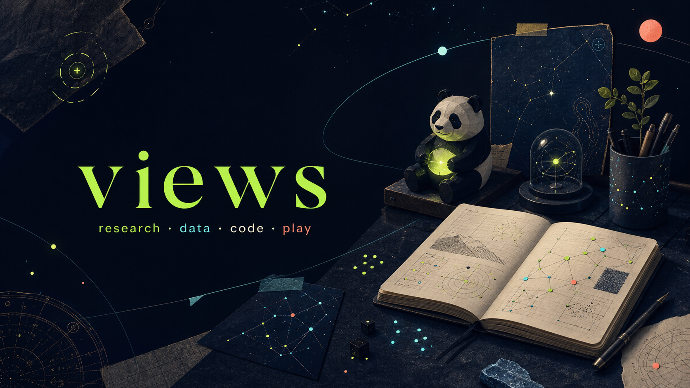
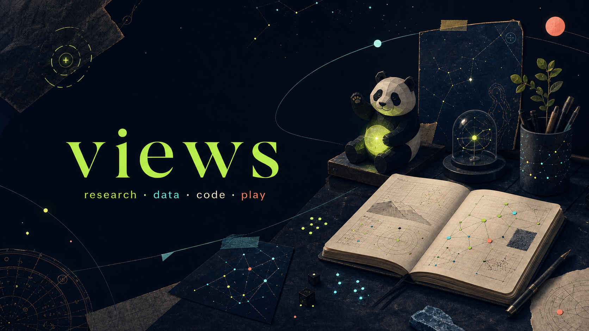
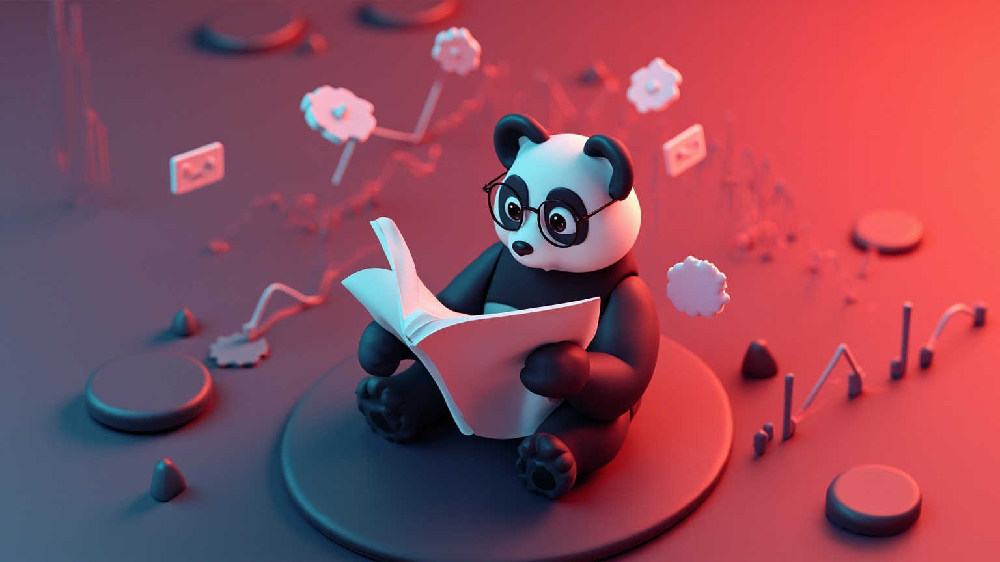
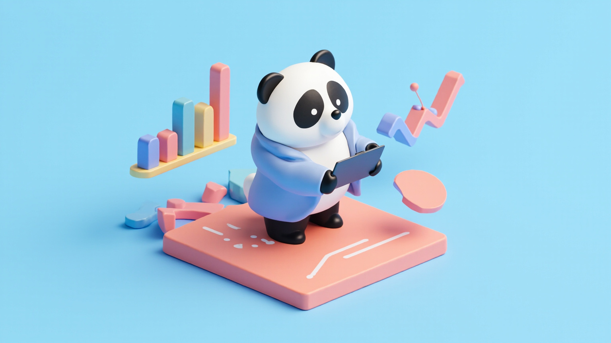

00 / HOW I WORK
不急着给答案。
先把桌子收拾干净。
资料要能回去找，数据要知道从哪来，工具要真的能用。剩下那些没那么确定的部分，先诚实地标成“再看看”。


ONLINE · UTC+8 · FIELD STATION
curious by default
field station / 001
这里是 views。放一点研究、一点代码、一点正在绕弯路的想法；不负责把世界解释完，只负责把看见的东西做得更清楚、更好玩。
00 / HOW I WORK
资料要能回去找，数据要知道从哪来，工具要真的能用。剩下那些没那么确定的部分，先诚实地标成“再看看”。
把事情讲得明白，不等于讲得很满。
好项目不是简历上的一行字。它应该能被点开、被追问，最好还能自己跑起来。
01 / ROUTES
它们不属于同一种题目：有的处理一笔订单，有的拆一条视频，有的试着让宏观新闻不再只是信息流。共同点是——都想把复杂的事，做成下一步能用的东西。
TRADE INTELLIGENCE · AGENT
VIDEO ATLAS · AGENT

03↗MACRO COCKPIT · DATA

04↗CUSTOMER ORBIT · DATA
 05↗
05↗RGAME · SIDE PROJECT
我喜欢的不是“工具很多”，而是把一个麻烦的环节拿掉之后，真的可以更专心地想事情。
02 / NOTES
正在展开工作台上的便签…
03 / SIDE QUESTS
我不太相信“兴趣要和主业保持距离”。有些关于系统、地图和选择的直觉，反而是在游戏、动画和一局没有赢的比赛里慢慢长出来。


动画、小说、三国、城市建造，还有不需要解释的快乐。


04 / MINI CONSOLE
点一下，让今天的工作台随机给你一张不太严肃的提示卡。结果只在这一页停留，不记任何东西。
✦
把浏览器的一个标签页关掉，给真正要做的事让一点位置。
05 / ABOUT VIEWS
views 是一个放东西的名字。这里记录研究和数据工具，也记录把页面打磨好看、把规则写成小游戏、以及对各种复杂系统的好奇。
如果某个项目刚好对你有用，欢迎沿着代码继续往下看；如果你也正在做一些难以归类的东西，那更好。
去 GitHub 继续逛 ↗